Your notes in sync. Your reminders with you.
Sync your Obsidian vault. Plan your day with reminders on desktop and mobile.
Beta release · Installs with BRAT
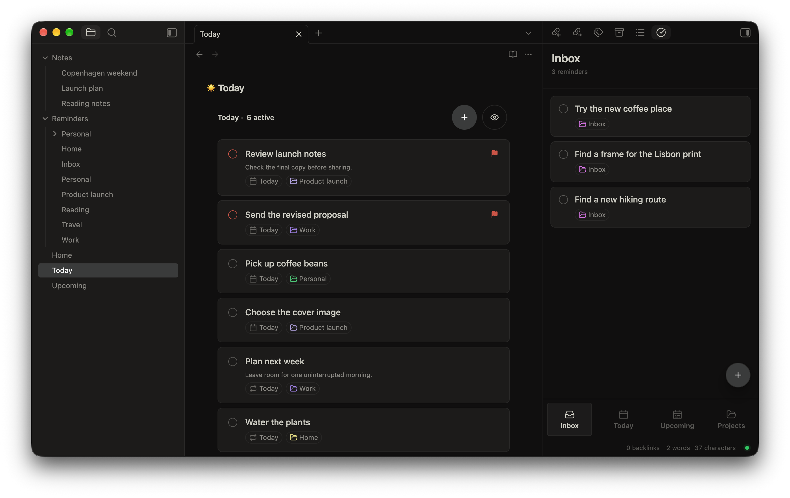
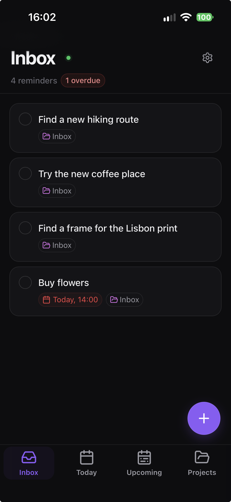
Your notes, on every device.
Keep writing in Obsidian on desktop or mobile. Crate syncs your vault through a server in your Cloudflare account or on your own hardware.
Conflict management
Edited the same note on two devices? Compare both versions and choose what to keep.
Review conflicting notes.
Conflicting copies are kept for review. See the affected notes together, then open a comparison.
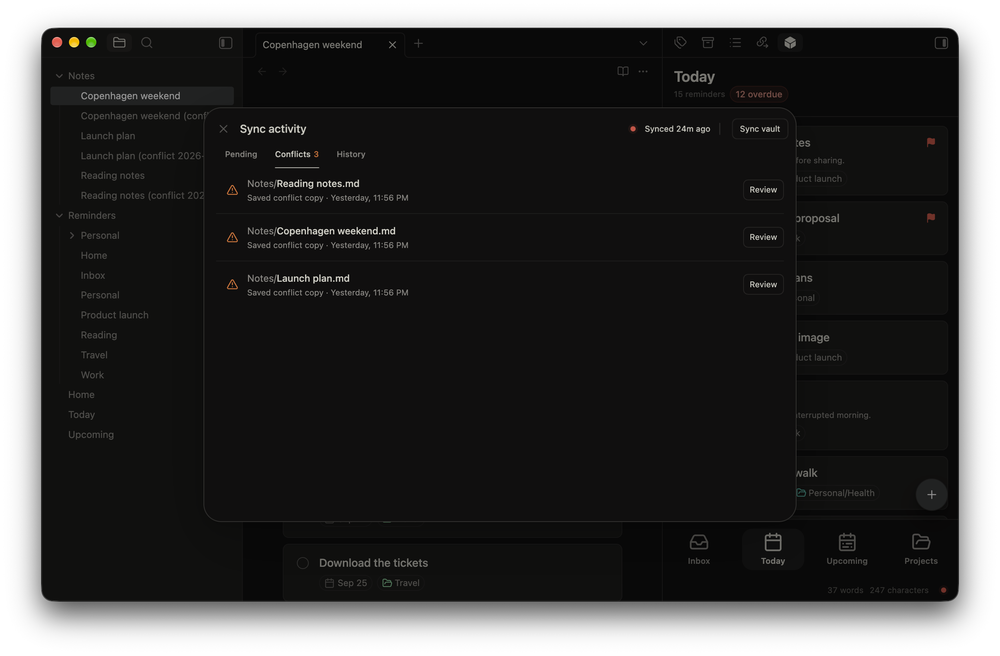
Choose what to keep.
See exactly what changed. Keep either version, keep both, or combine your edits into a custom result.
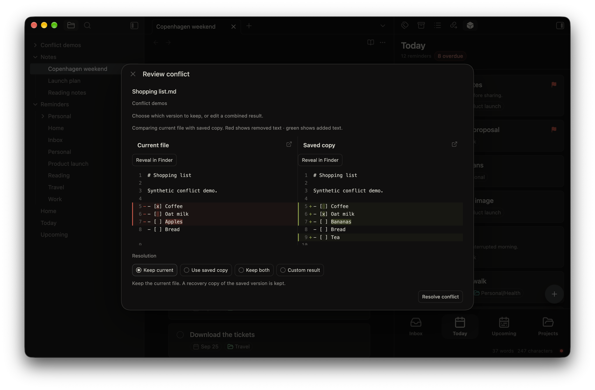
Sync activity
See what’s changing before you sync, and what was included afterward.
Pending changes
Compare edits and choose which files to sync.
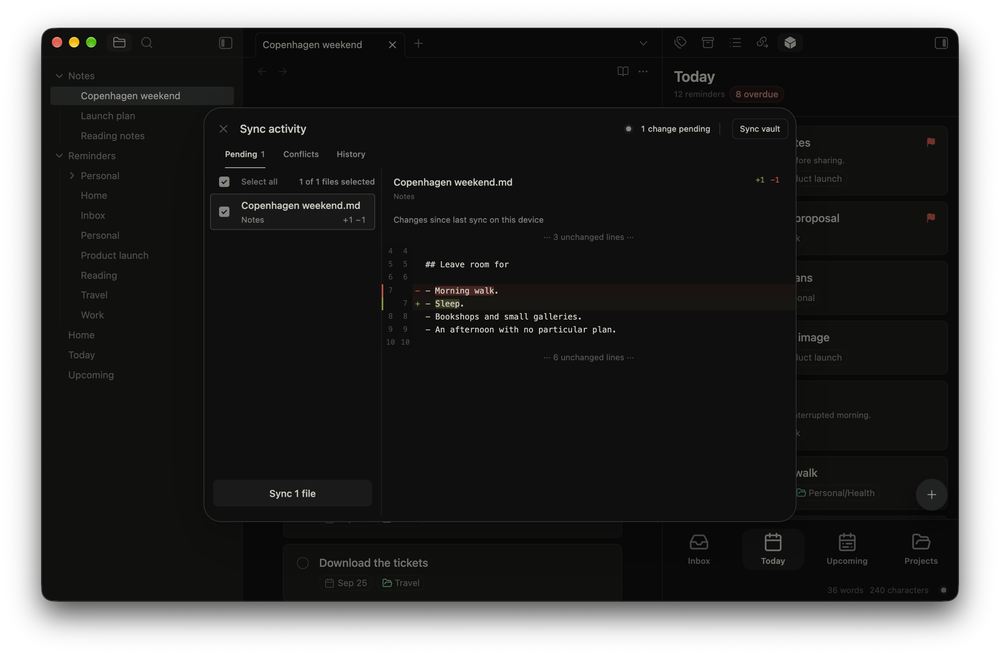
Sync history
Check recent transfers and the files included in each sync.
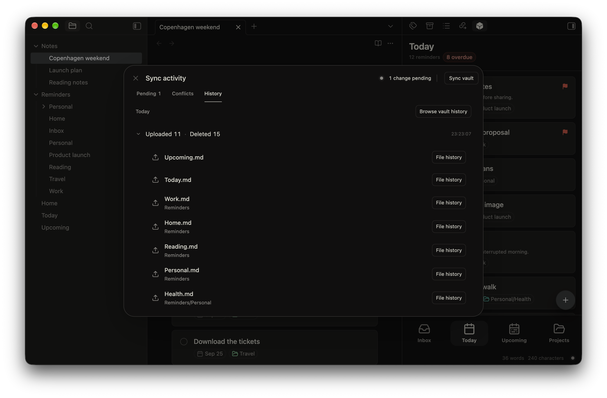
History and recovery
Revisit an earlier file or a saved state of your vault.
File history
Compare earlier versions with your current file and restore a saved copy.
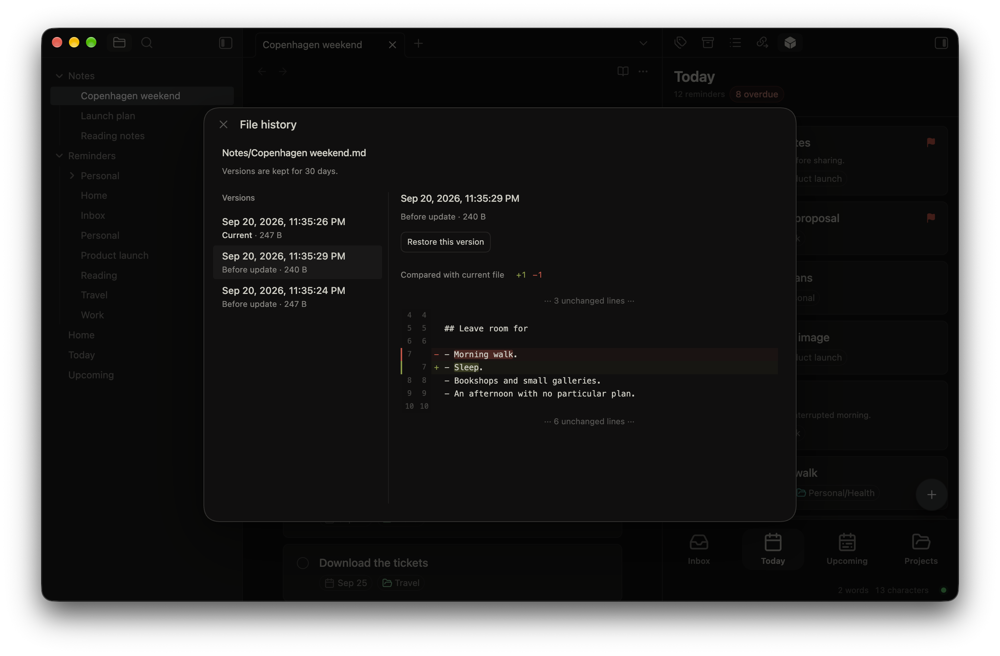
Vault history
Browse saved sync points, inspect changed files, and restore an earlier state.
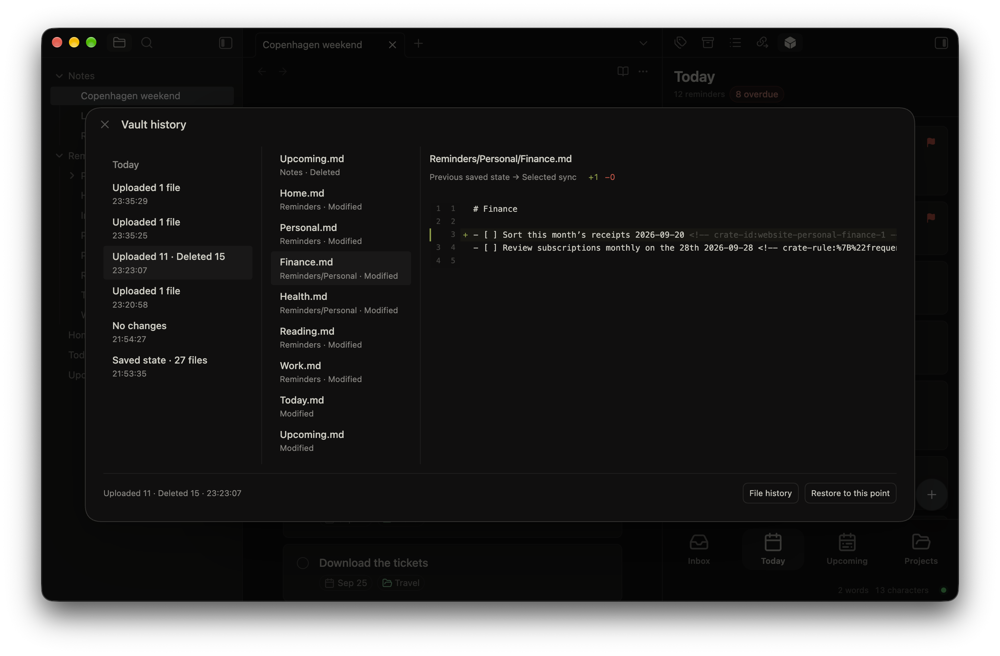
Write it down. Come back to it.
Add reminders while you work in Obsidian. Write “tomorrow at 12” and use # to choose a project.
Keep links in your reminders.
Save an article or webpage to revisit when you’re ready. Open it straight from your reminder.
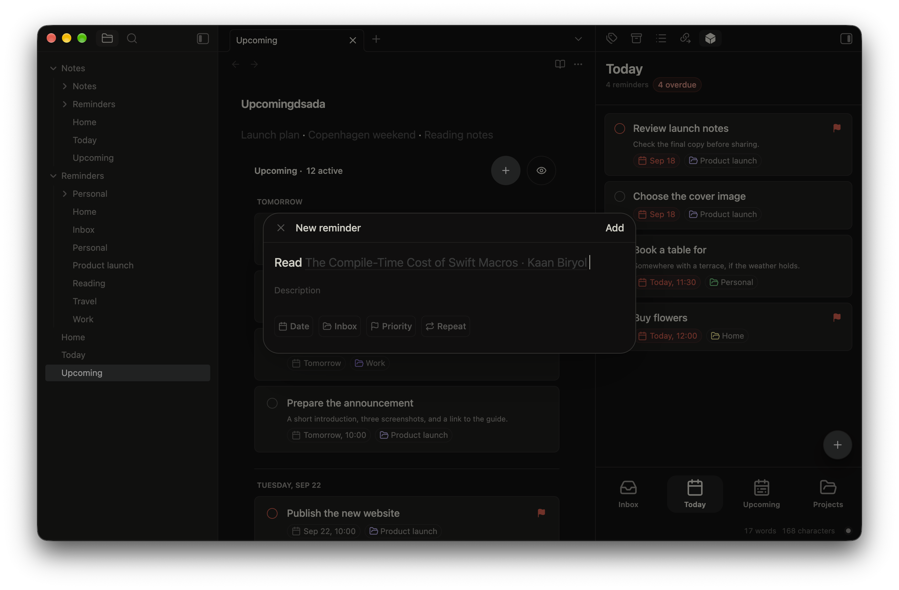
A reminder, even with your phone locked.
Get a nudge when it’s due. Enable notifications to see reminders on your lock screen.
Plan your day and update reminders on mobile. Changes sync back to your notes in Obsidian.
Plan your day
Capture what’s on your mind and see what’s coming next.
Inbox
Capture reminders in one place.
Upcoming
See what’s due next.
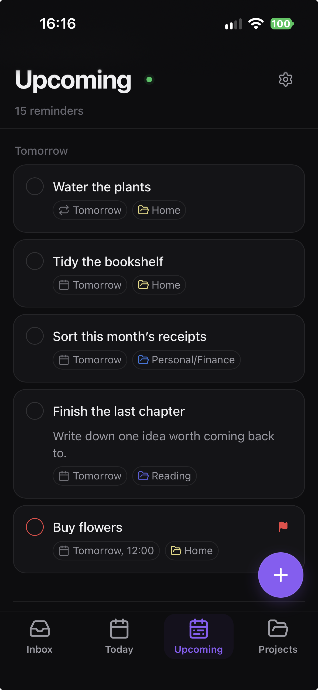
Organize your reminders
Keep related tasks together, wherever you are.
Projects
Organize related reminders and track progress.
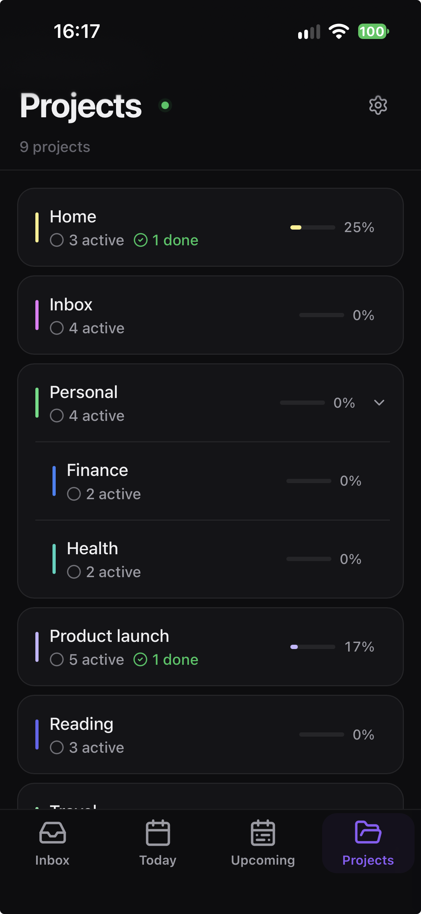
Choose a project
Move a reminder into the right project.
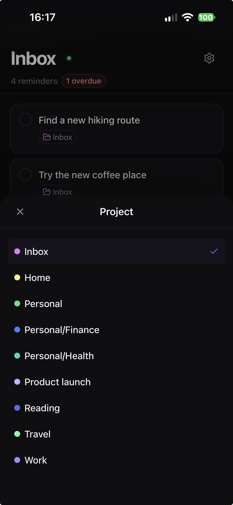
Edit and schedule
Add details, choose a time, and make space for routines.
Edit a reminder
Update its title, date, project, or priority in one place.
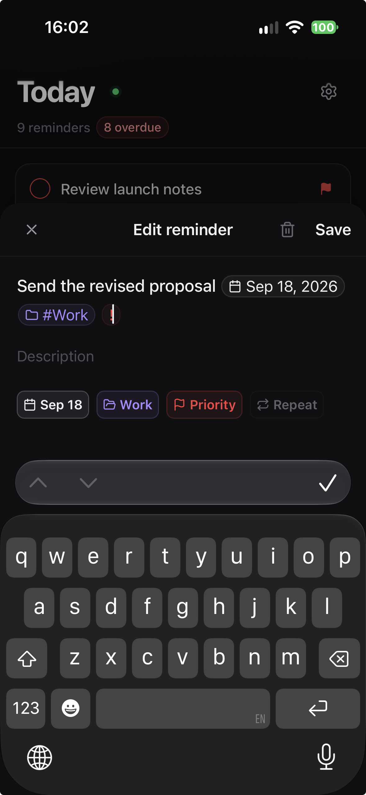
Schedule
Set a date and time.
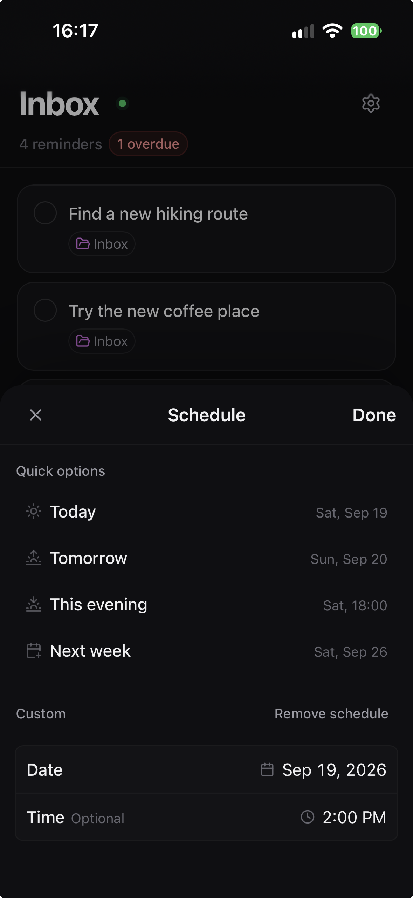
Repeat
Repeat daily, weekly, or monthly.
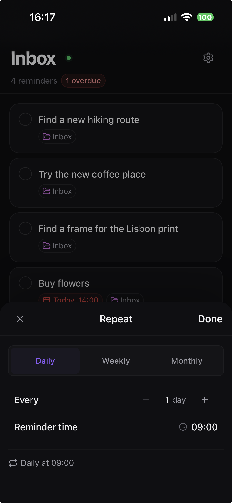
Your server. Your choice.
The same vault sync and reminders, with two ways to host them. No separate Crate account.
Your server can access synced content. Crate doesn’t provide end-to-end encryption. Keep a separate backup.
Self-hosting
Hosted by you.
Run vault sync and reminders on your own hardware with Docker. No Cloudflare account or domain required.
Set up with DockerRun from your Crate repository checkout
docker compose up -d --build
docker compose logs -f crate- Stored on your host
- Persistent Docker storage. You manage backups.
- Reachable from anywhere
- HTTPS included. The default address changes on restart.
- An always-on setup
- Keep your computer awake and Docker running.
Get started
Install the beta.
Install Crate in Obsidian, then connect your Cloudflare account or your own server.
Requires Obsidian 1.13.0+ and a Crate server.
Install BRAT
BRAT installs and updates beta plugins in Obsidian. Find BRAT in Settings → Community plugins. Install and enable it.
Add Crate
In Settings → BRAT, select Add beta plugin. Paste this repository, choose the latest release, and add the plugin. Then enable Crate in Community plugins.
kaanbiryol/obsidian-crateConnect your server
Open Settings → Crate → Connect with Cloudflare to create or select a cloud server. For self-hosting, select Connect to your server and enter your server address and pairing code.
Connect your other devices
Install Crate through BRAT on each Obsidian device and connect to the same server. Enable reminders to use the mobile app too.
A few practical details
Before you get started.
What you need to know about cost, hosting, and your data.
- Is Crate free?
- Crate is free and open source. You cover the hosting: Cloudflare usage charges may apply, or you can run it on hardware you manage.
- Do I need a server?
- Yes, for syncing between devices and using the reminders app. Choose your own Cloudflare account or a Docker server. The default Docker setup needs no Cloudflare account or domain. See self-hosting
- What works offline?
- Keep reading and editing your local notes in Obsidian, then sync when connected. The mobile app lets you browse previously cached reminders offline; reconnect to add or change them.
- Are my notes end-to-end encrypted?
- No. Your Cloudflare account and Worker, or the operator of your own server, can access synced content. Keep a separate backup of your vault. Read the privacy details